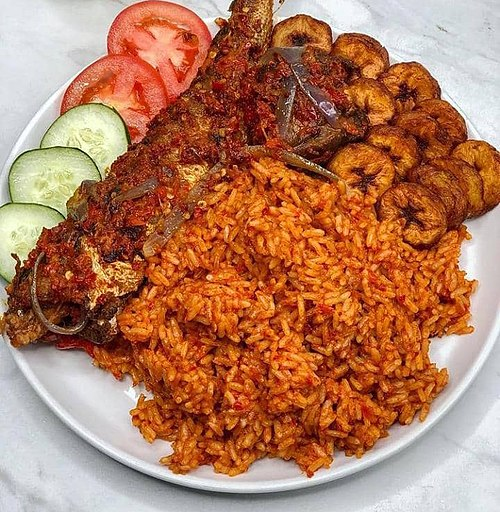

Jollof Rice

Description
Jollof Rice is a beloved West African one-pot rice dish made by cooking long-grain rice in a rich tomato and
pepper
sauce infused with aromatic herbs and spices. It is known for its vibrant red color, smoky flavor, and perfectly
seasoned grains. Jollof Rice is commonly served at celebrations, family gatherings, and everyday meals, pairing
well
with grilled chicken, fried plantains, beef, fish, or fresh salads.
Ingredients
- 3 cups long-grain parboiled rice
- 1/4 cup vegetable oil
- 2 medium onions, divided (one chopped, one sliced)
- 4 medium tomatoes, chopped
- 1 red bell pepper, chopped
- 2 Scotch bonnet peppers (adjust to taste)
- 3 tablespoons tomato paste
- 4 cups chicken or vegetable stock
- 2 teaspoons curry powder
- 1 teaspoon dried thyme
- 2 bay leaves
- 1 teaspoon paprika
- 1 teaspoon garlic powder
- 1 teaspoon ground ginger
- 2 seasoning cubes
- Salt, to taste
- 1/2 teaspoon ground black pepper
- 1 cup mixed vegetables (optional)
- 2 tablespoons butter (optional, for added richness)
Steps
- Rinse the rice thoroughly under cold water until the water runs mostly clear. Drain and set aside.
-
Blend the tomatoes, red bell pepper, Scotch bonnet peppers, and one chopped onion into a smooth mixture.
-
Heat the vegetable oil in a large, heavy-bottomed pot over medium heat. Add the sliced onion and sauté for
2-3 minutes until softened.
-
Stir in the tomato paste and cook for 3-5 minutes, stirring frequently, until it darkens slightly and loses
its raw taste.
-
Pour in the blended tomato mixture and cook for 15-20 minutes, stirring occasionally, until the sauce
thickens and the
oil begins to separate from the mixture.
-
Add the curry powder, thyme, paprika, garlic powder, ground ginger, black pepper, seasoning cubes, and bay
leaves. Stir well to combine.
-
Pour in the stock and bring the sauce to a gentle boil. Taste and adjust the seasoning with salt if needed.
- Add the rinsed rice and stir until all the grains are evenly coated with the sauce.
-
Cover the pot tightly. Reduce the heat to low and cook for 25-35 minutes, adding a small amount of stock or
water only if necessary.
- If using mixed vegetables, stir them in during the last 5-10 minutes of cooking.
-
Remove the bay leaves and gently fluff the rice with a fork. Stir in the butter, if desired, and allow the
rice to rest for 5 minutes before serving.
Home